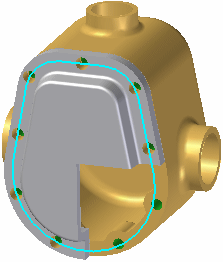

Along Curve pattern features command (assembly)
The Features tab → Pattern group → Along Curve  is a pattern command used to pattern assembly features in an assembly. The Along Curve command is also available in the synchronous part and sheet metal environments, ordered
part and sheet metal environments, and assembly environments for patterning parts
and features.
is a pattern command used to pattern assembly features in an assembly. The Along Curve command is also available in the synchronous part and sheet metal environments, ordered
part and sheet metal environments, and assembly environments for patterning parts
and features.
The command works a little differently in each environment. This topic describes the command bar options for patterning assembly features in the assembly environment. The command bar options for the other environments are described here:
When in the assembly environment, you can pattern assembly features such as holes, cutouts, and revolved cutouts around a selected curve.
For more detailed information on constructing assembly-based features, see Assembly-Based Features.
You can only pattern assembly features that were created within the current assembly. You cannot create an assembly pattern out of part features that reside in the assembly. Assembly-driven part features are features that affect all parts with the same document name as the selected parts. The reference plane, profile, and extent definition reside in the assembly document, but the surface geometry resides in the part documents. This option is useful when you want to globally modify one or more parts while working in the assembly. The surface geometry can be viewed in the part documents and any other assemblies that reference the part documents. You need write access to all the affected part files to construct an Assembly-Driven Part Feature.
An assembly-based feature only affects the parts you select. For profile-based features,
the reference plane, profile, extent definition, and surface geometry resides in and
can only be viewed from the assembly document where the feature was constructed. This
option is useful when you want to modify one or more commonly-used parts, but do not
want to affect other instances of the same parts in the active assembly or other assemblies
that reference those parts. You do not need write access to the affected part files
to construct an assembly feature pattern.

Along Curve pattern assembly features command bar
The Along Curve pattern assembly command bar options include:
- Select Step

-
Click on the features to be patterned. The items can be selected before or after selecting the command. After selecting the parent features to be patterned, right-click or press Enter to accept.
- Select Curve Step

-
Click on an edge or a curve chain. Use the Select option to choose between a Single or a Chain. After selecting the edge or a curve chain, right-click or press Enter to accept.
- Anchor Point

-
Click on a curve endpoint to specify the anchor point. After selecting the curve endpoint, optionally flip the direction of the pattern, project a start point or enter an offset start point value along the curve. After selecting the endpoint, direction and offset, right-click or press Enter to accept.
- Flip Pattern Direction

-
This is a toggle command that flips the direction of the pattern along the curve.
- Project Point to Curve

-
Specifies the offset distance from the selected keypoint by projecting a point from an element in the assembly. Used to define the offset using the Select tool instead of entering a fixed offset value in the in Offset field.
- Flip Pattern Direction
- Spacing Step

-
Specifies the item spacing for the selected Pattern Type. After selecting the spacing Pattern Type, click Next to continue. The Pattern Type and associated options are:
- Fit
-
The Fit pattern type only supports a Count option. The count value is the total number of occurrences that will be placed for the selected curve length including the parent. The Spacing value is the resulting spacing value.
- Fill
-
The Fill pattern type only supports a Spacing option. The count value is the total number of occurrences that will be placed for the selected curve length including the parent. The Spacing value is specified.
- Fixed
-
The Fixed pattern supports a Count and Spacing option. The count value is the total number of occurrences that will be placed for the selected curve length including the parent. The Spacing value is specified.
- Chord Length
-
The Chord Length pattern supports a Count, Spacing, and Skip option. The count value is the total number of occurrences that will be placed for the selected curve length including the parent. The Spacing value is specified as the chord length between two points.
The Skip value only applies to patterns where the Chord Length Pattern Type is specified. The Skip count option is used when more than 1 parent is to be patterned. This allows multiple patterns in sequence along the curve chord.
The skip value is specified as a whole number where the value of 0 means all instances as specified in Count are shown starting with the parent. For a value of 1, alternate instances are created with the parent as the first instance. For a value of 2, every third instance is created with the parent as the first instance. This value can increment up to two less than the total value of the count.
- Alignment Step

-
Specifies the item alignment for the selected pattern. This step has 6 options. After selecting between the Smart or Fast option, Occurrence Orientation, Rotation Type, any change in the Reference Point, any occurrences that are to be suppressed, or any occurrences that are to be added, select the Preview option to see the results of your selections.
Before you select the Finish option you have the opportunity to add parts to be included in the pattern using the Select Parts Step
 option.
option. If you are satisfied with the results after clicking the Preview option, you can assign a Name to the pattern that will appear in the PathFinder after you click Finish.
Right-click on the pattern name in the PathFinder to access edit functions and other pattern functions such as the Drop Pattern command that disconnects the parts from the pattern.
- Smart or Fast

-
Smart - smart patterns are used when the feature pattern goes across multiple part faces.

Fast - fast pattern are used to construct patterns quickly across planar surfaces.

- Occurrence Orientation
-
Sets the occurrence orientation for the pattern. You can customize the transformation and rotation of the pattern to better capture your design intent. You can specify that occurrences be placed in the pattern linearly, keeping the same orientations throughout the pattern. Or, you can specify a transformation that will change the orientations of the occurrences depending on the input curve or a specified plane. There are 5 options.
- Simple
-
Maintains the orientation of the parent. No Rotation Type option.
- Follow Curve
-
Orients parent to align with curve. Rotation Type: (1) Curve Position (2) Feature Position
- Follow Curve Chord
-
Orients parent to align with curve chord. Rotation Type: (1) Curve Position (2) Feature Position
- Using Surface
-
Orients parent to align with the Selection Type. Selection type options are Single (face), Chain (face or face chain), or a Body Rotation Type: (1) Curve Position (2) Feature Position.
- Using Plane
-
Orients parent to align with selected reference plane.
- Reference Point
-
Sets the reference point for the pattern. Used to change or move the anchor point.
- Suppress Occurrence
-
Suppresses selected pattern occurrences. Click on the green occurrence points (red arrow) to suppress or unsuppress individual occurrence instances.
- Insert Occurrence
-
Inserts pattern occurrences. Click on a key point to insert or edit an occurrence. You can click on an existing occurrence and add an Offset value or your can simply click on the path to add an occurrence at the selected location.
- Smart or Fast
How do I
Build a pattern of parts in an assemblyDrop an assembly pattern
Mirror components in an assembly
Copy and paste assembly components
Learn more
Pattern, mirror, and copy components in assembliesLook up more details
Pattern Parts commandPattern Parts command bar
Duplicate Component command
Pattern Parts command bar
Drop Pattern command
Remove Override Body command
Mirror Components command
Mirror Components command bar (Assembly)
Mirror component options (Assembly)
Pattern Along Curve (assembly)